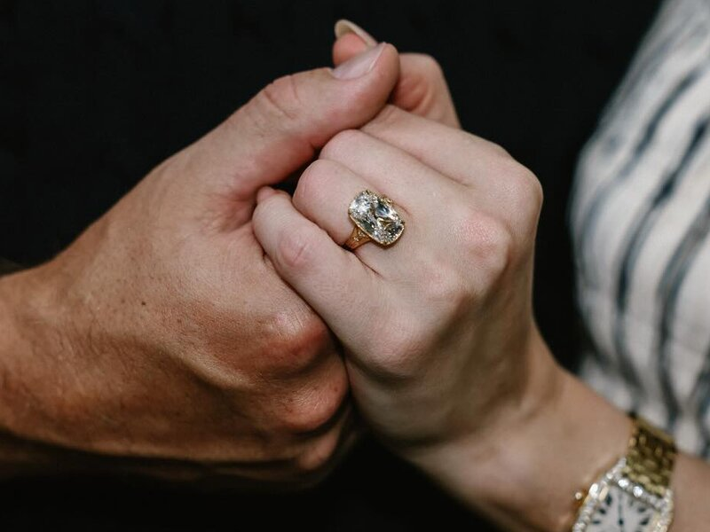
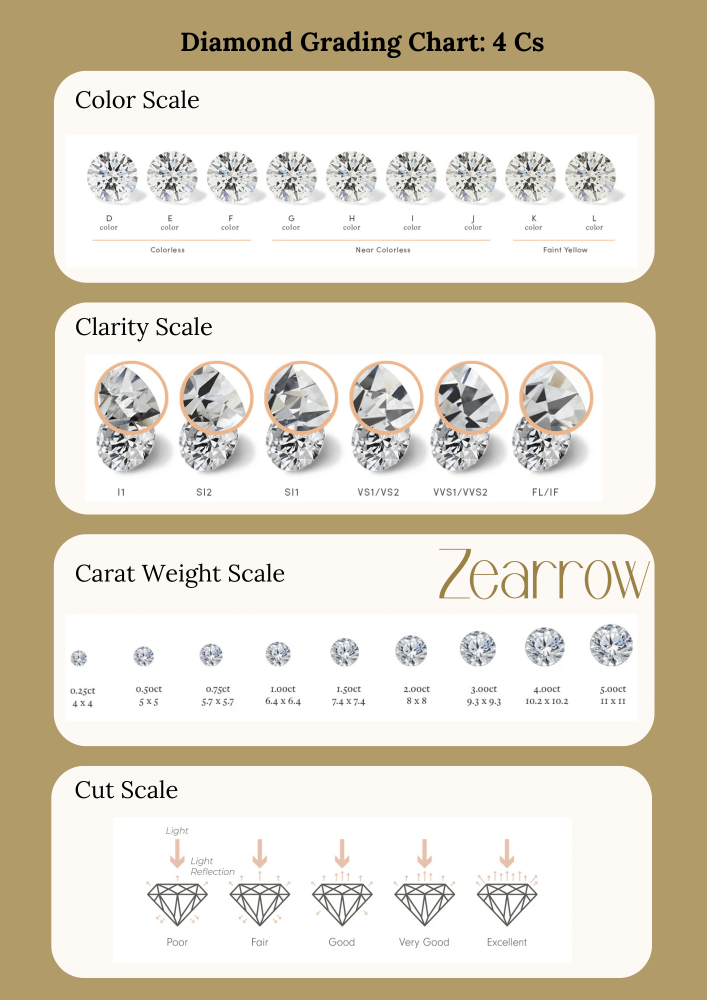
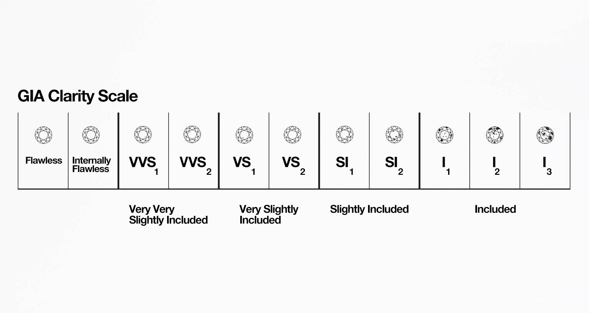

bm_fl_fit <- linear_reg() |>
fit(body_mass_g ~ flipper_length_mm, penguins)
bm_island_fit <- linear_reg() |>
fit(body_mass_g ~ island, penguins)
bm_fl_island_fit <- linear_reg() |>
fit(body_mass_g ~ flipper_length_mm + island, penguins)
bm_fl_island_int_fit <- linear_reg() |>
fit(body_mass_g ~ flipper_length_mm * island, penguins)
bm_fl_bl_fit <- linear_reg() |>
fit(body_mass_g ~ flipper_length_mm + bill_length_mm, penguins)Model selection
Lecture 8
Last time: \(R^2\) for real
- \(R^2\) measures a model’s goodness-of-fit;
- \(R^2\) is defined as the proportion of variation in the response variable explained by the model. So, one minus the proportion of variation unexplained:
\[ R^2=1-\frac{\text{var}(e_i)}{\text{var}(y_i)}. \]
- \(R^2=1\) indicates perfect fit, \(R^2=0\) indicates horrific fit, and everything in between. Like a “Rotten Tomatoes score” for your model.
Last time: penguins
We saw five different models all trying to predict the same thing:
Model selection
Question: Given many competing models for the same response, which model is “best”? What does that even mean?
. . .
Answer: Assign a “quality score” to each model, and pick the model with the best score:
| Model | Score | Verdict |
|---|---|---|
| Simple | 0.1 | ❌ |
| Additive | 0.5 | ✅ |
| Interaction | 0.48 | ❌ |
. . .
Variable selection: all of our models were linear, and they differed only by which predictor variables are included. By ranking models by quality score and picking the “best” one, we can determine which predictors are the “most important” to include.
Selection criteria
This is a big area of statistical research. There are loads of “quality scores” you could consider, and they prioritize different things: predictive accuracy, goodness-of-fit, simplicity, fairness, etc.
- \(R^2\);
- adjusted \(R^2\);
- Akaike Information criterion (AIC);
- Bayesian information criterion (BIC);
- … so many more
We won’t go into detail, but you will if you keep studying statistics.
tidymodels reports many of these for free
bm_fl_fit |>
glance() |>
select(r.squared, adj.r.squared, AIC, BIC)# A tibble: 1 × 4
r.squared adj.r.squared AIC BIC
<dbl> <dbl> <dbl> <dbl>
1 0.759 0.758 5063. 5074.\(R^2\)’s dirty little secret
\(R^2\) gives participation trophies. It always goes up when you add any new variable to the model, even if that variable is worthless.
Adding a phony variable
The original model fit:
linear_reg() |>
fit(body_mass_g ~ flipper_length_mm, penguins) |>
glance() |>
pull(r.squared)[1] 0.7589925. . .
Add a predictor that is literally just a bunch of random numbers:
Adjusted \(R^2\)
Because vanilla \(R^2\) blithely rewards the addition of any variable, no matter how meaningless, you shouldn’t use it for model selection. Instead, use adjusted \(R^2\). The formula is in the textbook if you’re dying to know, but here’s the tea:
- adjusted \(R^2\) penalizes the inclusion of unnecessary predictors;
- It prioritizes a parsimonious model:
- a model that fits/predicts well, and…
- a model that’s not too complicated (so our pea brains can still understand it);
- Occam’s razor!
. . .

For the penguins
bm_fl_fit |> glance() |>
pull(adj.r.squared)[1] 0.7582837bm_island_fit |> glance() |>
pull(adj.r.squared)[1] 0.3899995bm_fl_island_fit |> glance() |>
pull(adj.r.squared)[1] 0.7722296bm_fl_island_int_fit |> glance() |>
pull(adj.r.squared)[1] 0.7825604bm_fl_bl_fit |> glance() |>
pull(adj.r.squared)[1] 0.7585415. . .
Which model is “best”?
Balancing fit and complexity
More complex models (i.e., models with more predictors) tend to fit the data at hand better, but may not generalize well to new data.
Model selection criteria, like adjusted \(R^2\), help balance model fit and complexity to avoid overfitting by penalizing models with more predictors.
Overfitting
- Overfitting occurs when a model captures not only the underlying relationship between predictors and outcome but also the random noise in the data;
- Overfitted models tend to perform well on the observed data but poorly on new, unseen data.
- Good news: We have techniques to detect and prevent overfitting;
- Bad news: We won’t get into those until next week.
Back to variable selection
Given a set of competing models, all trying to predict the same response, we can line ’em up, compute adjusted \(R^2\) for each model, and then pick the model with the highest score.
Easy, right?
Listing out all the possible models
- The penguins dataset has \(p=6\) variables apart from body mass: species, island, bill length, bill depth, flipper length, and sex;
- How many models is that (ignoring the possibility of interaction, which makes things worse):
- 1 “empty” model: include no predictors;
- 6 “simple” models: include only one predictor;
- 15 two-predictor models;
- 20 three-predictor models;
- 15 four-predictor models;
- 6 five-predictor models;
- 1 “full” model: include all predictors.
- That’s \(2^6=64\) models in total you have to consider. Not the end of the world if you have a computer, but it gets worse…
Combinatorial explosion
- If you have \(p\) candidate predictors, then the set of all possible subsets you could include in a model grows very quickly;
- In the “big data” era, 100 predictors is amateur hour, so it becomes infeasible to fit every possible model;
- It pays to “search” through the space of models in a smarter, less brute-force way.
| \(p\) | # of models = \(2^p\) |
|---|---|
| 2 | 4 |
| 5 | 32 |
| 10 | 1024 |
| 20 | 1048576 |
| 30 | 1073741824 |
| 40 | \(\approx 1.098\times 10^{12}\) |
| 50 | \(\approx 1.13\times 10^{15}\) |
| 100 | \(\approx 1.27\times 10^{30}\) |
Backward elimination
Start with the full model (the model that includes all potential predictor variables). Variables are eliminated one-at-a-time from the model until we cannot improve the model any further.
Procedure:
- Start with a model that has all predictors we consider and compute the adjusted \(R^2\).
- Next fit every possible model with 1 fewer predictor.
- Compare adjusted \(R^2\)s to select the best model (highest adjusted \(R^2\)) with 1 fewer predictor.
- Repeat steps 2 and 3 until adjusted \(R^2\) no longer increases.
Example: recall the cars
mtcars mpg cyl disp hp drat wt qsec vs am gear carb
Mazda RX4 21.0 6 160.0 110 3.90 2.620 16.46 0 1 4 4
Mazda RX4 Wag 21.0 6 160.0 110 3.90 2.875 17.02 0 1 4 4
Datsun 710 22.8 4 108.0 93 3.85 2.320 18.61 1 1 4 1
Hornet 4 Drive 21.4 6 258.0 110 3.08 3.215 19.44 1 0 3 1
Hornet Sportabout 18.7 8 360.0 175 3.15 3.440 17.02 0 0 3 2
Valiant 18.1 6 225.0 105 2.76 3.460 20.22 1 0 3 1
Duster 360 14.3 8 360.0 245 3.21 3.570 15.84 0 0 3 4
Merc 240D 24.4 4 146.7 62 3.69 3.190 20.00 1 0 4 2
Merc 230 22.8 4 140.8 95 3.92 3.150 22.90 1 0 4 2
Merc 280 19.2 6 167.6 123 3.92 3.440 18.30 1 0 4 4
Merc 280C 17.8 6 167.6 123 3.92 3.440 18.90 1 0 4 4
Merc 450SE 16.4 8 275.8 180 3.07 4.070 17.40 0 0 3 3
Merc 450SL 17.3 8 275.8 180 3.07 3.730 17.60 0 0 3 3
Merc 450SLC 15.2 8 275.8 180 3.07 3.780 18.00 0 0 3 3
Cadillac Fleetwood 10.4 8 472.0 205 2.93 5.250 17.98 0 0 3 4
Lincoln Continental 10.4 8 460.0 215 3.00 5.424 17.82 0 0 3 4
Chrysler Imperial 14.7 8 440.0 230 3.23 5.345 17.42 0 0 3 4
Fiat 128 32.4 4 78.7 66 4.08 2.200 19.47 1 1 4 1
Honda Civic 30.4 4 75.7 52 4.93 1.615 18.52 1 1 4 2
Toyota Corolla 33.9 4 71.1 65 4.22 1.835 19.90 1 1 4 1
Toyota Corona 21.5 4 120.1 97 3.70 2.465 20.01 1 0 3 1
Dodge Challenger 15.5 8 318.0 150 2.76 3.520 16.87 0 0 3 2
AMC Javelin 15.2 8 304.0 150 3.15 3.435 17.30 0 0 3 2
Camaro Z28 13.3 8 350.0 245 3.73 3.840 15.41 0 0 3 4
Pontiac Firebird 19.2 8 400.0 175 3.08 3.845 17.05 0 0 3 2
Fiat X1-9 27.3 4 79.0 66 4.08 1.935 18.90 1 1 4 1
Porsche 914-2 26.0 4 120.3 91 4.43 2.140 16.70 0 1 5 2
Lotus Europa 30.4 4 95.1 113 3.77 1.513 16.90 1 1 5 2
Ford Pantera L 15.8 8 351.0 264 4.22 3.170 14.50 0 1 5 4
Ferrari Dino 19.7 6 145.0 175 3.62 2.770 15.50 0 1 5 6
Maserati Bora 15.0 8 301.0 335 3.54 3.570 14.60 0 1 5 8
Volvo 142E 21.4 4 121.0 109 4.11 2.780 18.60 1 1 4 2Example: recall the cars
(AIC is an alternative selection criterion. Lower is better.)
backward_model <- lm(mpg ~ ., data = mtcars)
backward_model <- stats::step(backward_model, direction = "backward")Start: AIC=70.9
mpg ~ cyl + disp + hp + drat + wt + qsec + vs + am + gear + carb
Df Sum of Sq RSS AIC
- cyl 1 0.0799 147.57 68.915
- vs 1 0.1601 147.66 68.932
- carb 1 0.4067 147.90 68.986
- gear 1 1.3531 148.85 69.190
- drat 1 1.6270 149.12 69.249
- disp 1 3.9167 151.41 69.736
- hp 1 6.8399 154.33 70.348
- qsec 1 8.8641 156.36 70.765
<none> 147.49 70.898
- am 1 10.5467 158.04 71.108
- wt 1 27.0144 174.51 74.280
Step: AIC=68.92
mpg ~ disp + hp + drat + wt + qsec + vs + am + gear + carb
Df Sum of Sq RSS AIC
- vs 1 0.2685 147.84 66.973
- carb 1 0.5201 148.09 67.028
- gear 1 1.8211 149.40 67.308
- drat 1 1.9826 149.56 67.342
- disp 1 3.9009 151.47 67.750
- hp 1 7.3632 154.94 68.473
<none> 147.57 68.915
- qsec 1 10.0933 157.67 69.032
- am 1 11.8359 159.41 69.384
- wt 1 27.0280 174.60 72.297
Step: AIC=66.97
mpg ~ disp + hp + drat + wt + qsec + am + gear + carb
Df Sum of Sq RSS AIC
- carb 1 0.6855 148.53 65.121
- gear 1 2.1437 149.99 65.434
- drat 1 2.2139 150.06 65.449
- disp 1 3.6467 151.49 65.753
- hp 1 7.1060 154.95 66.475
<none> 147.84 66.973
- am 1 11.5694 159.41 67.384
- qsec 1 15.6830 163.53 68.200
- wt 1 27.3799 175.22 70.410
Step: AIC=65.12
mpg ~ disp + hp + drat + wt + qsec + am + gear
Df Sum of Sq RSS AIC
- gear 1 1.565 150.09 63.457
- drat 1 1.932 150.46 63.535
<none> 148.53 65.121
- disp 1 10.110 158.64 65.229
- am 1 12.323 160.85 65.672
- hp 1 14.826 163.35 66.166
- qsec 1 26.408 174.94 68.358
- wt 1 69.127 217.66 75.350
Step: AIC=63.46
mpg ~ disp + hp + drat + wt + qsec + am
Df Sum of Sq RSS AIC
- drat 1 3.345 153.44 62.162
- disp 1 8.545 158.64 63.229
<none> 150.09 63.457
- hp 1 13.285 163.38 64.171
- am 1 20.036 170.13 65.466
- qsec 1 25.574 175.67 66.491
- wt 1 67.572 217.66 73.351
Step: AIC=62.16
mpg ~ disp + hp + wt + qsec + am
Df Sum of Sq RSS AIC
- disp 1 6.629 160.07 61.515
<none> 153.44 62.162
- hp 1 12.572 166.01 62.682
- qsec 1 26.470 179.91 65.255
- am 1 32.198 185.63 66.258
- wt 1 69.043 222.48 72.051
Step: AIC=61.52
mpg ~ hp + wt + qsec + am
Df Sum of Sq RSS AIC
- hp 1 9.219 169.29 61.307
<none> 160.07 61.515
- qsec 1 20.225 180.29 63.323
- am 1 25.993 186.06 64.331
- wt 1 78.494 238.56 72.284
Step: AIC=61.31
mpg ~ wt + qsec + am
Df Sum of Sq RSS AIC
<none> 169.29 61.307
- am 1 26.178 195.46 63.908
- qsec 1 109.034 278.32 75.217
- wt 1 183.347 352.63 82.790Foreward stepwise regression
Forward stepwise regression is the reverse of the backward elimination technique. Instead, of eliminating variables one-at-a-time, we start from an “empty model” and we add variables one-at-a-time until we cannot find any variables that improve the model any further.
Procedure:
- Start with a model that has no predictors.
- Next fit every possible model with 1 additional predictor and calculate adjusted \(R^2\) of each model.
- Compare adjusted \(R^2\) values to select the best model (highest adjusted \(R^2\)) with 1 additional predictor.
- Repeat steps 2 and 3 until adjusted \(R^2\) no longer increases.
A new application
A girl’s best friend
A game

- 10-carat old mine brilliant-cut diamond
- 58 facets
- Est. at $550K - $1M

- 5-carat antique cushion-cut diamond
- $280,000 price tag
- Est. 30-40-carat high color center diamond
- 1-carat oval side stones
- Est. value upwards of $3M
The 4 Cs
When evaluating a diamond, jewelers typically focus on four key characteristics known as the 4 Cs:
- Carat — How big is it?
- Cut — How much does it sparkle?
- Clarity — How flawless is it?
- Color — How colorless is it?
The 4 Cs are the primary factors that determine a diamond’s value.
What do these things mean?

What do these things mean?
For example:

We have some data!
diamonds# A tibble: 5,000 × 7
price carat cut color clarity length_mm width_mm
<dbl> <dbl> <fct> <fct> <fct> <dbl> <dbl>
1 3867 0.9 Ideal I VS 6.13 6.18
2 12048 2.01 Ideal J SI 8.08 8.03
3 878 0.41 Very Good F SI 4.73 4.69
4 4325 0.68 Ideal D VVS 5.66 5.69
5 401 0.3 Ideal E SI 4.33 4.35
6 5504 1.19 Ideal D SI 6.91 6.89
7 1767 0.63 Good H VS 5.47 5.56
8 4704 1.02 Very Good G SI 6.36 6.4
9 1121 0.52 Ideal F SI 5.17 5.2
10 2137 0.7 Very Good H VS 5.58 5.62
# ℹ 4,990 more rows